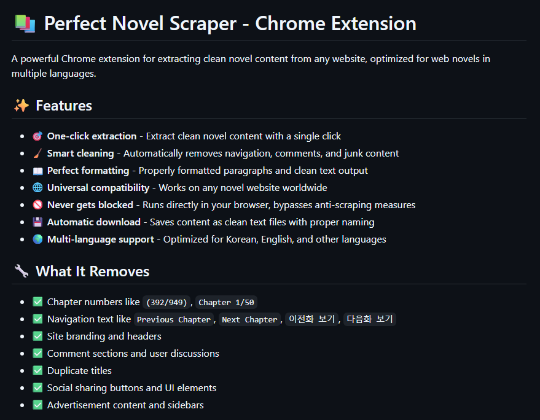

Tools · Personal Project
A Chrome extension (Manifest V3) that extracts clean text content from web pages, using adaptive DOM parsing with multiple fallback detection strategies instead of relying on site-specific rules.

Built to feed the translation pipeline with clean source text: rather than hard-coding selectors for specific sites, the extension layers several DOM-parsing strategies and falls back through them until one produces a confident result, so it keeps working as pages change or new sites get thrown at it. A regex-based cleanup pass strips boilerplate and normalizes the extracted text across multiple languages before it's handed off.